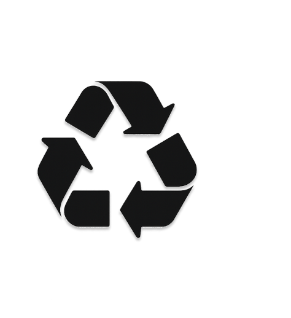

Registre, acompanhe e reduza seus resíduos com nossa plataforma inteligente de gestão ambiental.
Papel, plástico, vidro, metal, orgânicos e eletrônicos.
Encontre pontos de coleta mais próximos.
Veja horários e contato de cada local.
Monitore seu impacto ambiental.
O RE-CICLE conecta geradores de resíduos a pontos de coleta, facilitando o descarte correto e promovendo a sustentabilidade.